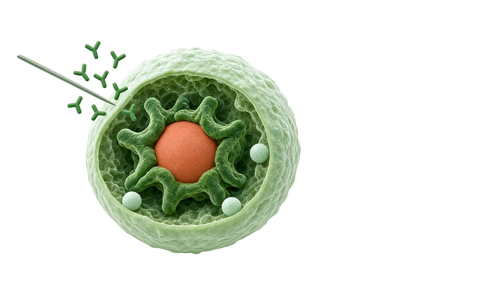
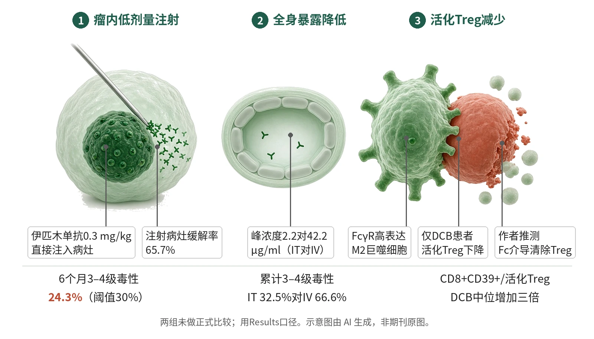

封面示意：巨噬细胞包裹赤陶红调节性T细胞，旁有注射针。图片由 AI 生成，非原文图片。
在61例初治转移性黑色素瘤中，瘤内伊匹木单抗0.3 mg/kg联合静脉纳武利尤单抗，6个月3–4级治疗相关不良事件为24.3%，低于30%阈值。

- 瘤内注射低剂量伊匹木单抗
- 全身药物暴露显著降低
- 注射病灶缓解更深
- DCB患者活化Treg减少
示意图概括试验主线：伊匹木单抗以十分之一剂量注入黑色素瘤病灶，血清峰浓度远低于静脉给药；获益者肿瘤富含活化Treg与FcγR阳性M2巨噬细胞，治疗后活化Treg选择性减少。示意图由 AI 生成，依据原文结果绘制，非期刊原图，不代表分子比例
研究背景与待解问题
静脉联合抗CTLA4与抗PD1能带来持久缓解，但约60%患者出现≥3级治疗相关不良事件，真实世界中1–4%致死，临床上只有约一半适用患者使用。抗PD1是不清除型IgG4，受体饱和（约0.3 mg/kg）后加量不再增效；伊匹木单抗则是未修饰的IgG1，可结合FcγR并介导ADCC和吞噬，疗效与毒性都随剂量上升。
Tselikas等在Nature报告的NIVIPIT试验检验一个假设：把伊匹木单抗总剂量降低十倍至0.3 mg/kg、以5 mg/ml浓度直接注入肿瘤，能否保留局部高暴露的抗肿瘤作用、同时减轻全身毒性，并借新鲜肿瘤活检寻找持久获益的生物标志物。
研究设计
这是一项随机、多中心1b期试验，纳入61例初治转移性黑色素瘤患者，在4个中心按2:1随机至瘤内（IT）组40例或静脉（IV）组21例，按转移分期、BRAF状态和PD-L1表达分层。两组均静脉给予纳武利尤单抗1 mg/kg，IT组加瘤内伊匹木单抗0.3 mg/kg，IV组加静脉3 mg/kg，每3周1次共4次，随后纳武利尤单抗3 mg/kg每2周1次，最长12个月。
主要终点为6个月治疗相关3–4级毒性无事件生存，采用Fleming两阶段设计（α 10%、把握度90%），实验组需38例可评估患者。IV组只作内部对照，原文未做两组正式比较，也未为疗效比较设计效能。共对46个病灶完成162次瘤内注射，并在基线和第3周采集新鲜活检与血样。
核心结果
主要终点达成
IT组40例中37例可评估，9例（24.3%）在6个月内发生治疗相关3–4级不良事件，低于预设30% Fleming阈值；IT组75.7%未发生≥3级毒性，IV组为42.9%。摘要口径为6个月3–4级事件发生率22.6%对57.1%，作者称与抗PD1单药相当。注射操作本身未引起≥3级不良事件。
全程毒性与药代
整个随访期累计3–4级治疗相关不良事件IT组32.5%、IV组66.6%，12个月后进入平台；IT组仅1例4级事件，IV组3级占52%、4级占14%。在24例有连续样本者中，IT组伊匹木单抗平均峰浓度2.2±1.7 μg/ml，IV组42.2±12.3 μg/ml；谷浓度0.9±0.5对8.4±10 μg/ml（P<0.0001）。
注射病灶缓解更深
按RECIST v1.1，IT组可评估注射病灶最佳总缓解率65.7%，35例中完全缓解11例（31.4%）、部分缓解12例（34.3%）；同批患者基线未注射靶病灶完全和部分缓解分别为25%（10/40）和20%（8/40），摘要报告注射病灶65.7%、未注射病灶50%。IV组最佳总缓解率为62%。
生存未见差异
中位随访55.5个月（IQR 48.2–62.8）后，两组PFS（log-rank P=0.2315）和总生存（P=0.1808）均无统计学差异；IT组中位PFS 13.8个月[4.4–27.7]，IV组未达到。持久临床获益（DCB，缓解或稳定维持超过6个月）与生存延长相关，且不论抗CTLA4给药途径。
活化Treg只在DCB减少
无论伊匹木单抗经何种途径给药，基线活化Treg和M2巨噬细胞更多都预示持久临床获益。第3周时，只有DCB患者的CD4+CD25+CD39+活化Treg比例显著下降，CD8+CD39+细胞与该类Treg之比中位数增加三倍，无DCB患者不变；DCB肿瘤的FCGR1A、FCGR3A和FCGR3B基线表达也更高。
机制解读
原文实验证明：药效学上两组都有靶点结合证据：注射病灶浸润淋巴细胞膜PD1下降，可溶性PD1在肿瘤分泌组和血浆升高；低剂量瘤内伊匹木单抗同样使可溶性CD25升高、循环CD4+和CD8+T细胞ICOS上调。CD8+T细胞CD25及CD4+T细胞CD69、OX40等外周活化主要见于静脉高剂量组。
肿瘤层面，DCB与基线MHC-I和MHC-II介导的适应性免疫相关：CD8+PD1+T细胞、HLA-II蛋白、TH1和TFH标志及B细胞特征更高，肿瘤突变负荷在DCB与无DCB间无明显差异；肿瘤内T细胞、Treg和CD68表达在IT与IV组间相近。这些均为关联证据。
作者推测：作者推测，与小鼠一致，Fc完整的IgG1抗CTLA4在人体内也能清除活化、肿瘤特异的Treg，但只发生在同时含活化Treg和FcγR阳性效应细胞的肿瘤中。IT组峰浓度约低20倍而剂量低十倍，作者认为提示药物部分滞留于注射肿瘤和/或引流淋巴结；IV组更强的外周活化可能解释其更高毒性。
局限与不确定
- 疗效比较受设计限制：试验未为疗效比较设计效能，讨论中IT组未注射靶病灶客观缓解率50%、总生存均低于IV组（缓解率65%）；作者把IV组高于历史基准（50.6%至58%）部分归因于组别小和分层后残余不平衡。
- 样本小且分层分析更小：IV组仅21例，IT组37例可评估主要终点；基线流式Treg比较只有DCB 13例、无DCB 7例，Fig. 3和Fig. 4的组间比较为未做多重比较校正的双侧Wilcoxon检验。
- 外推有边界：注射病灶多为淋巴结和皮肤或皮下转移，深部病灶有限；新鲜活检标志物需独立队列前瞻验证。Results称IT组中位总生存50个月，而图注称两组均未达到，口径不一。
临床/产业意义
如果后续试验证实，瘤内低剂量伊匹木单抗可为局部控制关键的场景（作者点名寡转移和新辅助）提供一种保留注射病灶活性、同时降低全身毒性的双检查点给药方式。
结果还提示疗效主要取决于既有肿瘤免疫而非给药途径。新鲜活检流式测CD4+CD25+CD39+细胞和分泌组颗粒酶可在数小时内完成；作者认为这为未来前瞻试验按肿瘤生物学筛选和分层患者提供依据，但仍需独立队列前瞻验证。